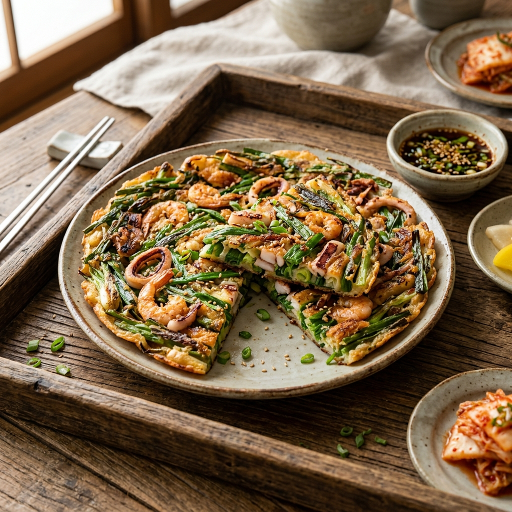
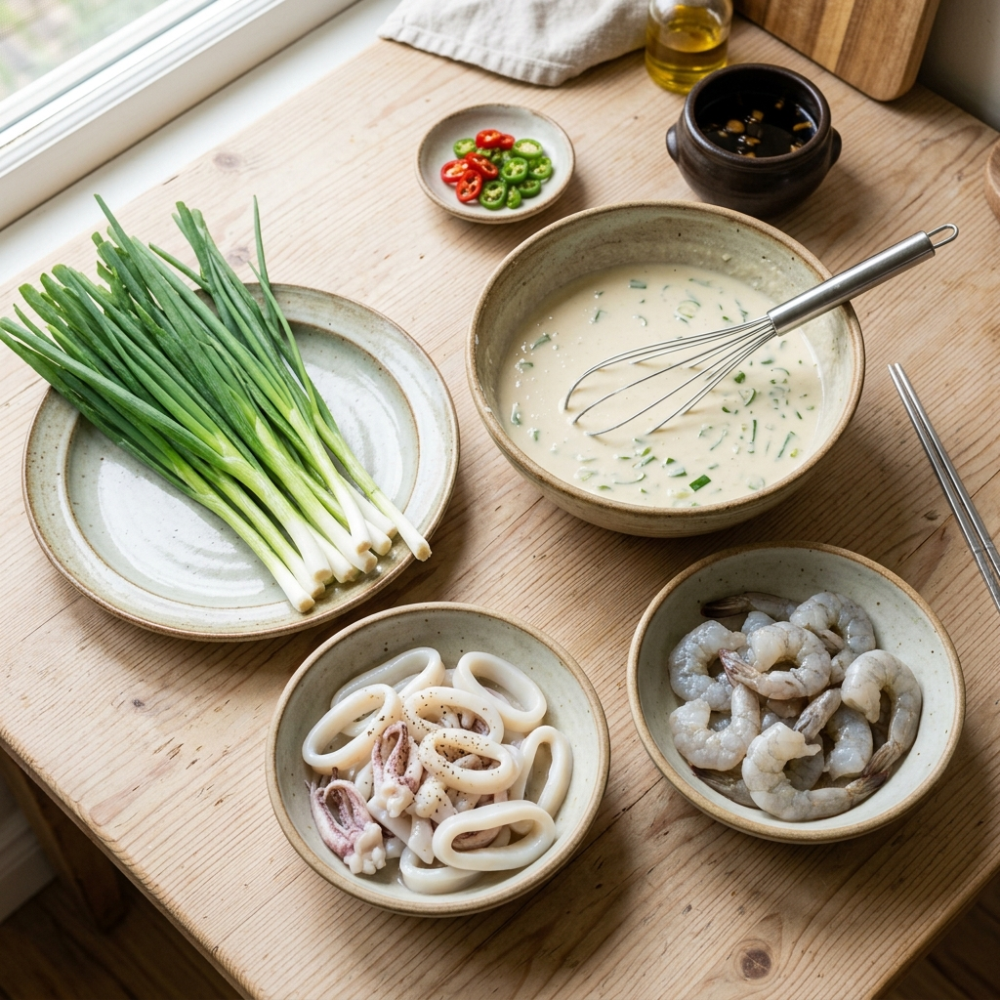
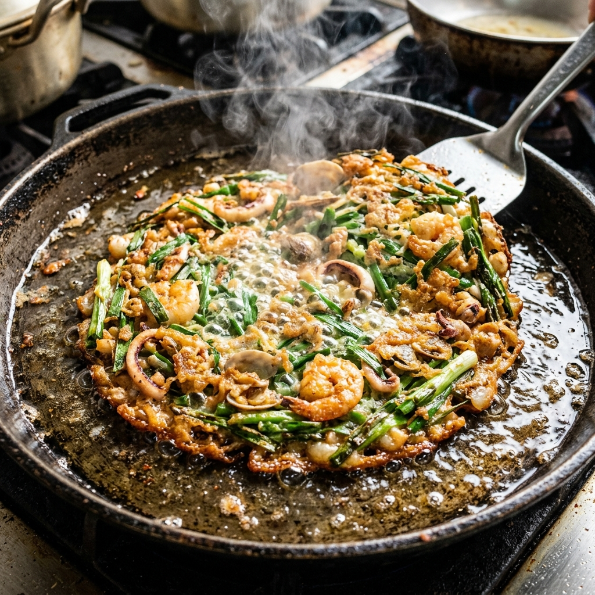

비법 해물파전 바삭하게 만드는 법: 반죽 황금비율과 해물 손질의 기술
비 오는 날이면 어김없이 생각나는 고소한 기름 냄새의 주인공, 해물파전! 하지만 집에서 만들면 식당에서 먹던 그 '바삭함'이 나오지 않아 고민하셨나요? 오늘 전해드리는 레시피는 단순한 조리법을 넘어, 글루텐 형성을 억제하고 해물의 수분을 완벽히 제어하는 전문가의 공법을 담았습니다. 한 입 베어 물 때마다 '바삭' 소리가 터지는 프리미엄 해물파전을 완성해 보세요.
01 | 해물파전의 미학: 바삭한 식감과 풍부한 영양

노릇하게 구워진 황금빛 해물파전의 완성 모습 / AI 제작 이미지
해물파전은 쪽파의 달콤한 풍미와 다양한 해산물의 감칠맛이 어우러지는 한국의 대표적인 별미입니다. 단순히 맛있는 안주를 넘어, 쪽파에 풍부한 비타민과 해산물의 고단백 성분이 조화를 이루는 영양학적으로도 훌륭한 요리입니다.
많은 분들이 '바삭함'을 위해 밀가루 양을 늘리거나 오래 굽지만, 이는 오히려 전을 눅눅하고 딱딱하게 만드는 원인이 됩니다. 진정한 바삭함은 반죽의 온도 조절과 해물의 전처리에 달려 있습니다. 오늘 가이드를 통해 겉은 튀김처럼 바삭하고 속은 촉촉한 '겉바속촉'의 정석을 마스터해 보시길 바랍니다.
02 | 재료 준비 매뉴얼: 신선함이 생명입니다
| 구분 |
재료명 |
분량 및 비고 |
| 주재료 |
쪽파 |
150g (팬 크기에 맞춰 절단) |
| 해산물 |
오징어, 새우, 조갯살 |
각 100g씩 (신선한 것 권장) |
| 반죽 |
부침가루, 튀김가루, 전분 |
1:1:0.2 비율 구성 |
| 기타 |
청양고추, 홍고추, 달걀 |
각 1개씩 (색감과 매콤함 조절) |
해물파전의 맛을 결정하는 것은 원재료의 퀄리티입니다. 쪽파는 머리 부분이 너무 굵지 않은 것을 선택해야 반죽과 잘 어우러지며, 해산물은 냉동보다는 생물을 사용하는 것이 풍미 면에서 압도적입니다. 특히 오징어는 몸통 위주로 사용하면 식감이 훨씬 부드럽습니다.
03 | 바삭함을 결정짓는 반죽 황금비율 소스

신선한 쪽파와 손질된 해산물 재료 준비 / AI 제작 이미지
전문점 바삭함의 비밀은 반죽 배합에 있습니다. 부침가루 1컵, 튀김가루 1컵, 그리고 감자 전분 2큰술을 섞어보세요. 부침가루의 간과 튀김가루의 바삭함, 전분의 쫄깃함이 결합되어 최고의 식감을 만들어냅니다.
여기에 반드시 '얼음물' 2컵을 사용해야 합니다. 물의 온도가 낮을수록 밀가루의 글루텐 형성이 억제되어 전이 눅눅해지지 않고 가볍게 튀겨지듯 익습니다. 반죽을 섞을 때도 너무 오래 젓지 말고 날가루가 살짝 보일 정도로만 가볍게 섞어주는 것이 포인트입니다.
04 | 해물 전처리 공정: 수분을 잡아야 바삭하다
가장 많은 분들이 실수하는 부분이 바로 해물을 바로 팬에 올리는 것입니다. 해물에서 나오는 수분은 전을 눅눅하게 만드는 최대의 적입니다. 세척한 해물은 끓는 물에 청주 1큰술을 넣고 딱 30초만 데쳐주세요.
살짝 데친 해물은 찬물에 헹구지 말고 그대로 체에 밭쳐 수분을 날린 뒤, 키친타월로 꾹꾹 눌러 남은 물기를 완벽히 제거해야 합니다. 이 과정을 거쳐야 반죽물이 해물 표면에 착 달라붙어 떨어지지 않고 바삭한 식감을 유지할 수 있습니다.
05 | 조리 단계 1: 쪽파 배치와 반죽물 투입

팬에서 지글지글 익어가는 해물파전의 소리와 향기 / AI 제작 이미지
이제 본격적인 조리 단계입니다. 팬을 충분히 달군 뒤 식용유를 평소보다 넉넉하게(팬 바닥이 찰랑거릴 정도) 두릅니다. 기름의 온도가 올라가면 쪽파를 가지런히 팬에 올립니다.
쪽파 위에 준비한 해물을 골고루 펼쳐 놓은 뒤, 반죽물을 해물 사이사이 빈틈을 채운다는 느낌으로 얇게 부어줍니다. 반죽을 너무 많이 부으면 떡처럼 뭉칠 수 있으니 재료들이 서로 붙을 정도로만 조절하는 것이 중요합니다.
06 | 조리 단계 2: 화력 조절과 계란 코팅
파전은 중강불에서 구워야 바삭합니다. 밑면이 노릇하게 익어 팬을 흔들었을 때 전이 자유롭게 움직이면 뒤집을 타이밍입니다. 뒤집기 직전, 윗면에 미리 풀어둔 달걀물을 골고루 뿌려주세요.
달걀물은 해산물이 떨어지지 않게 접착제 역할을 함과 동시에 고소한 풍미와 화려한 비주얼을 더해줍니다. 뒤집은 후에는 뒤집개로 전을 꾹꾹 눌러주어 재료들이 기름과 밀착되어 튀기듯이 익게 만듭니다. 이때 기름이 부족하다면 팬 가장자리로 조금 더 보충해 줍니다.
07 | 조리 단계 3: 마지막 마무리를 통한 수분 증발
양면이 모두 노릇하게 익었다면 마지막 비법을 실행할 차례입니다. 불을 센 불로 높여 앞뒤로 10초씩만 더 구워주세요. 이 과정은 전 속의 남은 수분을 날려버리고 기름을 밖으로 밀어내어 식어도 바삭함이 유지되게 만듭니다.
너무 오래 구우면 재료가 탈 수 있으니 주의 깊게 살펴봐야 합니다. 다 구워진 전은 바로 접시에 담지 말고 식힘망 위에 잠시 올려두어 수증기가 빠져나가게 하면 더욱 좋습니다. 기름기가 적당히 빠진 바삭한 파전의 모습에 감탄하시게 될 것입니다.
08 | 전문가의 팁: 절대 망치지 않는 비법
⚠️ 주의사항: 반죽에 소금을 직접 넣지 마세요! 부침가루에 이미 간이 되어 있고, 나중에 간장에 찍어 먹기 때문에 자칫 짜질 수 있습니다.
만약 해물이 자꾸 떨어진다면 해물에 마른 밀가루를 살짝 묻힌 뒤 반죽에 넣으면 접착력이 훨씬 좋아집니다. 또한, 파의 머리 부분이 너무 두껍다면 칼등으로 살짝 두드려 납작하게 만들면 익는 속도를 맞출 수 있습니다.
초간장은 간장 2 : 식초 1 : 설탕 0.5 비율에 고춧가루와 다진 양파를 듬뿍 넣으면 해물의 느끼함을 잡아주는 환상의 짝꿍이 됩니다. 남은 파전은 냉동 보관했다가 에어프라이어에 180도 5분만 돌리면 갓 만든 것처럼 바삭하게 드실 수 있습니다.
09 | 영양 정보 및 어울리는 음식 페어링
해물파전은 쪽파의 알리신 성분이 소화를 돕고 피로 회복에 효과적입니다. 다양한 해산물은 타우린이 풍부해 간 건강에도 도움을 주죠. 하지만 기름진 요리인 만큼 신선한 채소 무침과 곁들이면 좋습니다.
최고의 페어링은 역시 시원한 막걸리입니다. 막걸리의 유기산이 파전의 느끼함을 씻어주고 발효 풍미가 해물의 감칠맛을 돋워줍니다. 술을 즐기지 않는다면 상큼한 유자 에이드나 탄산수를 곁들여보세요. 정성이 가득 담긴 해물파전으로 오늘 저녁 식탁을 풍성하게 꾸며보시길 바랍니다.
#해물파전레시피
#해물파전바삭하게
#쪽파요리
#홈쿡레시피
#비오는날음식
#해산물요리
#겉바속촉비법
#막걸리안주추천
#전통요리
#황금비율반죽